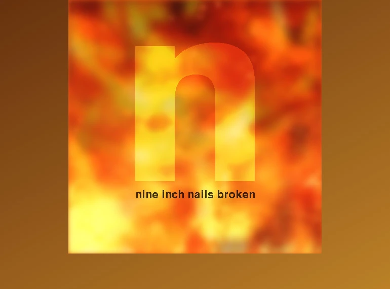

Pour cet exercice, vous devez écrire du CSS afin de recréer la pochette du mythique album industriel "Broken" de Nine Inch Nails.
Aperçu du résultat 👇

Matériel
Dossier de départ
Couleurs 🎨
#4d1806
#fcbd3c
#e85812
Médias
Feu 1
Feu 2
Il est interdit de modifier le HTML.
Requis de base
Téléchargez les images et placez les dans un dossier images.
L'arrière-plan doit être un dégradé allant du brun au jaune et partant du coin haut gauche pour aller au coin bas droite.
L'album doit avoir une dimension de 500x500px, être centré horizontalement et être de couleur orange.
Requis arrière-plan 1
Utilisez le pseudo-élément ::before afin créer le premier layer d'arrière-plan en position absolue couvrant tout l'espace disponible à l'intérieur de l'album.
Attribuez lui l'image d'arrière-plan bg-1.webp.
Utilisez les filtres afin que le layer ait un contraste de 90%, une luminosité de 110% et un flou de 5px;
Requis arrière-plan 2
Utilisez le pseudo-élément ::after afin créer le deuxième layer d'arrière-plan en position absolue couvrant tout l'espace disponible à l'intérieur de l'album.
Attribuez lui l'image d'arrière-plan bg-2.webp.
Changez son opacité afin qu'il soit à moitier transparent et utilisez les filtres afin qu'il ait un flou de 10px.
À ce stade-ci vos arrière-plans devraient déborder de l'album. Faites en sorte de faire disparaitre le superflu.
Requis texte
En ce moment, les textes devraient se retrouver derrière les layers de l'arrière-plan. Faites-en sorte qu'ils se retrouvent au premier plan.
Utilisez @font-face afin de charger la police d'écriture AkzidenzGrotesk-Black.otf, nommez la Broken et attribuez-la aux textes.
Les textes doivent être centrés horizontalement et prendre toute la largeur de l'album.
Le h1 doit avoir une grosseur de police d'écriture de 500px, être positionné à -120px du haut et être de couleur blanche.
Il doit aussi avoir une opacité de 0.6 et un mode de fusion overlay.
Le h2 doit avoir une grosseur de police d'écriture de 22px, être positionné à 370px du haut et être de couleur noire.
Attribuez-lui une opacité de 0.8.
Remise
Renommez votre dossier "nin_[nom]_[prenom]".
Zippez votre dossier "nin_[nom]_[prenom]".
Joignez votre fichier .zip au devoir "TP06: Nine Inch Nails - Broken".
Ambiance
Notes de cours 📚
Filtres
blur, contrast, grayscale, sepia, etc.